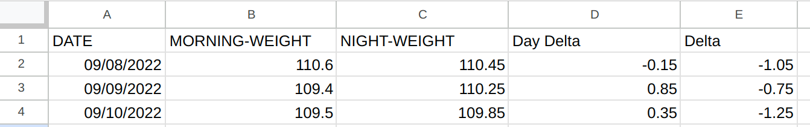
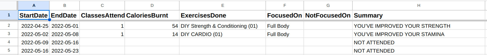
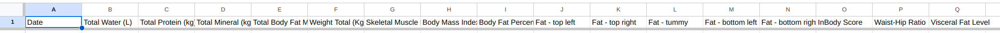
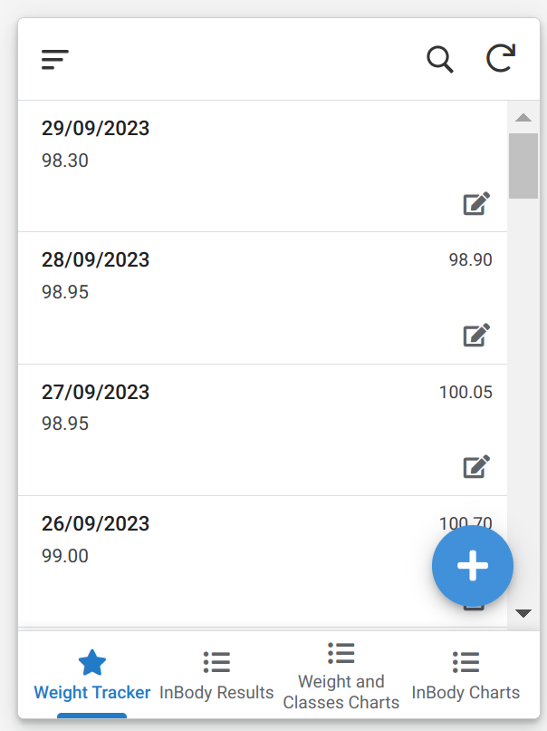
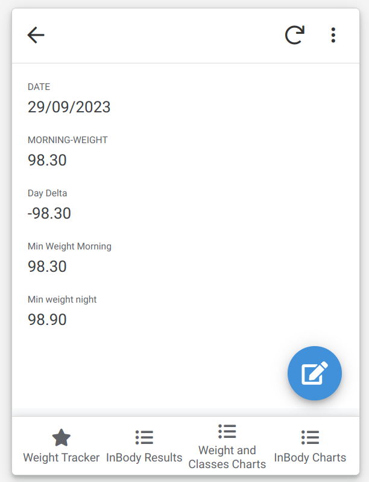
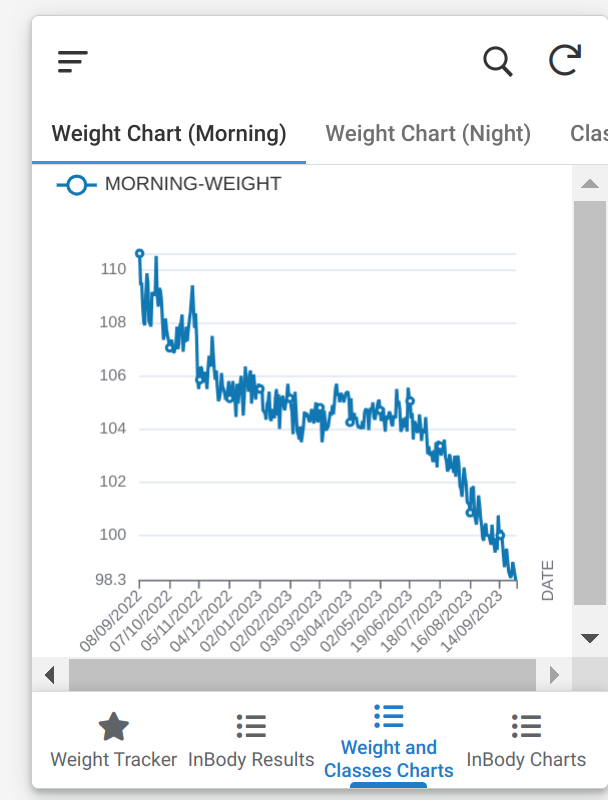
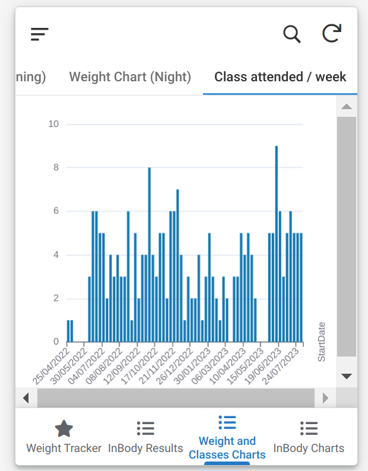

Fitness Tracking 🔗
The post will describe how I track my fitness journey so far.
Slight background: I am on the journey to be the person who goes to gym daily, my goal is to reduce weight, and get lean. I go to cult for gym.
What all I track so far? 🔗
- Weight (morning and night)
- Number of weeks I had been regular in gym/number of classes attended.
- Occasional BMI and other metrics from InBody machine installed in the gym I go to.
The actual exercises I do, and the number of reps/PRs etc are tracked in the Cult app itself, and for now I had not went into finding the API for that to extract that data into sheet.. Maybe sometime in near future :)
How I track all this? 🔗
Weight 🔗
I have a simple google sheet which looks like this:

Column D and E are calculated as Di = Ci - Bi, Ei = Bi+1 - Ci tracking how much weight changed in that day, and the next day.
Until sometime back, this was the interface I used for updating weight everyday: open sheet, add date if not there, add the weight entries. I have a better way which uses this sheet itself as database/backend, gonna come to it at the end.
Number of weeks I had been regular in gym/number of classes attended. 🔗
This data is something I occasionally run a script (I should probably automate this) which calls CULT’s API to get the data, and I put that manually into a google sheet then. Figuring out exact API was done by downloading raw cult apk, pass it through apk-mitm and then use http-toolkit to intercept the traffic while I visit corresponding page in the app to see the API that the app calls..
The script looks something like in this.
The sheet then looks like  with self-explanatory column names.
Again, this sheet also acts as a backend now, with frontend I will describe at the end on how do I visualize all this.
Occasional BMI and other metrics from InBody machine installed in the gym I go to. 🔗
This is also backed by google sheet, and I have no automated way to get this data, I just manually enter it into the sheet.
From the GYM, I get the data printed on a page, from which I manually enter to the frontend I am gonna describe next.
The sheet by the way looks like:

Frontend for all this 🔗
Entering all this data manually into the google sheet is a hard task, which lead me sometimes missing recording the data. So, I tried to follow the advice that Atomic Habits book’s second rule of habit formation preaches: Make it easy.
So, the simplest way I thought was having an app in which I can quickly crunch in numbers (Ik google sheet also is the same thing, but the interface is hard to enter on the phone), so I used appsheet to quickly create a UI on top of the google sheets.
My app looks something like this:
Landing screen 🔗

This shows the weight entries, and a + button to add in new entries, and clicking on anyone brings interface like this: , where I can edit during night to record night weight.
InBody Results 🔗
Exactly similar to Landing screen, but another tab at the bottom for this.
Charts - Weight and Classes 🔗
The third tab has charts for how weight is progressing and for cult gym classes.


InBody charts 🔗
The last one has inbody charts for metrics: Body Fat Percentage, Total Fat (kg), Muscle Mass (kg), Visceral Fat Level, Waist Hip Ratio.